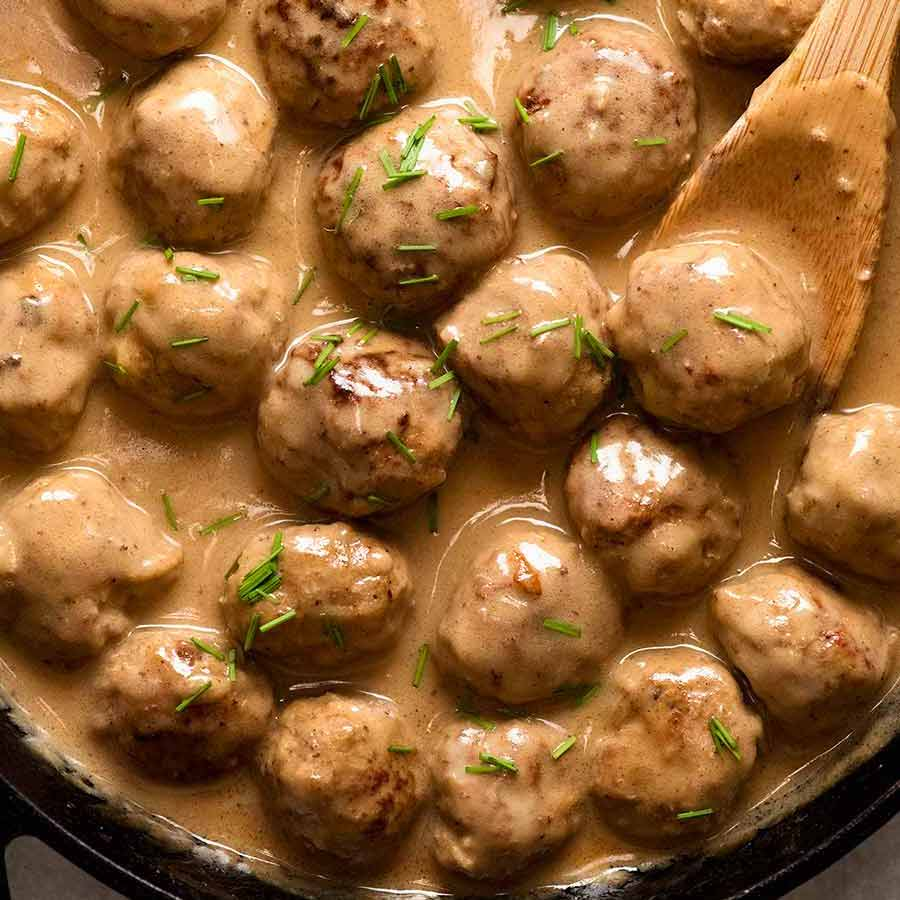

Swedish Meatballs:

Swedish meatballs have always been super delectable, and Ikea has made them popular. With this recipe you can make them in the comfort of your own home without the making an adventure to the store. And I dare say they are even better! Super easy to make you’ll be surprised you haven’t made them sooner. So what are you waiting for?!
The secret to these heavenly swedish delights is the unique spices of allspice and nutmeg. And then in the sauce you add worcestershire sauce and dijon mustard for tantalizing flavor. The combination is irresistibly the best meatballs ever!
Swedish Meatball Ingredients:
- Ground Beef: Regular ground beef.
- Bread Crumbs: I used Panko.
- Parsley: Freshly chopped.
- Allspice and Nutmeg: Trust me, these spices are what make it uniquely delicious.
- Onion: Finely chopped.
- Garlic Powder: Gives flavor without the bulk.
- Salt and Pepper To taste.
- Egg: The binder for the meatballs.
- Olive Oil: To brown the meatballs in.
- Butter: Creates the perfect flavor while helping the beef brown, you’ll add more for the sauce.
- Flour: The thickener.
- Beef Broth: Creates the base for the sauce.
- Heavy Cream: This creates the creamy velvety sauce.
- Worcestershire Sauce: Secret ingredient that creates a rich flavor.
- Dijon Mustard: Spice
Constructing these Swedish Vittles
- Mix: In medium sized bowl combine ground beef, panko, parsley, all spicee, nutmeg, onion, garlic powder, salt and pepper and egg. Mix till combined.
- Roll: Roll into 12 large meatballs or 20 small meatballs. In a large skillet heat olive oil and 1 tablespoon butter.
- Brown: Add the meatballs and cook turning continuously until brown on each side and cooked through. Transfer to a plate and cover with foil.
- Sauce: In the same skillet add 4 Tablespoons butter and flour and whisk till it turns brown. Slowly stir in beef broth and heavy cream. Add the worcestershire sauce and mustard and bring to a simmer till it starts to thicken.
- Simmer: Add the meatballs back to the skillet and simmer for another 1-2 minutes. Add salt and pepper to taste.
Home